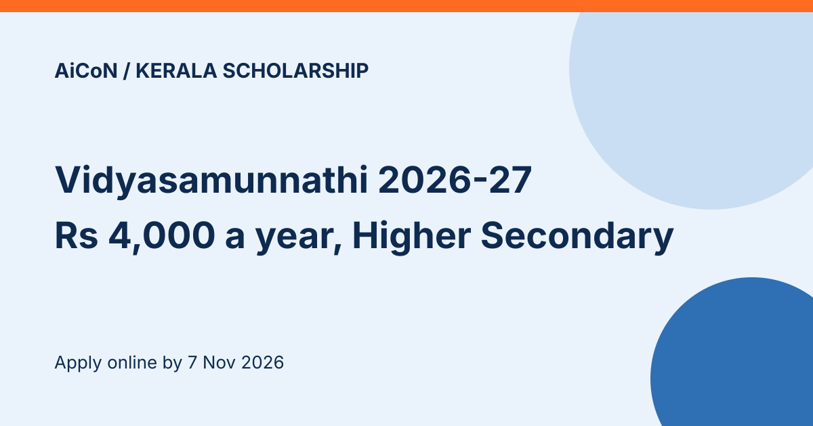

Vidyasamunnathi Scholarship 2026-27: Kerala, ₹4,000 a year for Higher Secondary, apply by 7 November
The Kerala State Welfare Corporation for Forward Communities (Samunnathi) is taking online applications for the Vidyasamunnathi Merit Scholarship 2026-27. Applications opened on 8 October 2026 and close on 7 November 2026. For Higher Secondary (Class 11 and 12) students in government or aided schools, the scholarship is ₹4,000 a year, with about 5,879 scholarships, depending on funds.

Higher Secondary category at a glance
- Amount: ₹4,000 per year
- Number: 5,879 scholarships, approximate and based on funds
- Institutions: government or aided schools in Kerala (Class 11 and 12)
- Academic basis: SSLC or equivalent with a B+ grade or 70% marks
- Last date: 7 November 2026, online
Who can apply?
- Students from the non-reserved (unreserved) communities of Kerala, from economically backward families
- Annual family income from all sources must not exceed ₹4,00,000
- Studying in a government or aided institution in Kerala
- The student needs an active, working account in a nationalised or scheduled bank, in the student's own name
Documents to upload
- A school certificate in the prescribed format (available on the website)
- Family annual income certificate from the Village Officer, in the name of a person on the ration card. Individual income certificates are not accepted
- Caste proof: a certificate from the Village Officer naming the caste, or the SSLC certificate page that shows it
- Mark list (SSLC or equivalent)
- First page of the bank passbook, with account number, IFSC and branch clearly visible
- Pages 1 and 2 of the ration card
- First page of the SSLC certificate
Rules that trip people up
- Register once on kswcfc.org, log in with the user name and password sent to your registered mobile number, create your profile, then apply. Students registered earlier log in with their existing details.
- Apply afresh every year. Earlier applications are not considered.
- Preference goes to lower-income applicants, subject to funds.
- Money goes only to the bank account given in the application. Errors in the account number are the applicant's responsibility.
- Students who receive other central or state scholarships or stipends are not eligible, except e-grants. A wrong declaration means the amount must be repaid with 12% compound interest. It also prevents future scholarship applications.
- Incomplete applications, wrong details or missing uploads are rejected, and later complaints are not accepted. The corporation's decision is final.
- Do not post printed copies to the corporation.
A careful checklist
- Open the scheme only from kswcfc.org.
- Get the income certificate and school certificate ready first.
- Check that the bank account is active and in the student's name.
- Submit well before 7 November 2026.
We read the 2026-27 Higher Secondary guideline PDF in full (it is a Malayalam document) and the corporation's home page news on 13 October 2026. We did not open the application portal.
What changed since this post?
KSWCFC's homepage was opened on 13 October 2026 and still shows applications from 8 October to 7 November 2026. The full three-page Higher Secondary PDF was rechecked. This guide does not verify amounts for other categories. The scholarship count is approximate and depends on funds. No application was opened or submitted. No emblem or logo is used; this is an AiCoN explainer, not a government publication.
Sources: KSWCFC home (news flash with dates), Higher Secondary guidelines 2026-27 (PDF), all guideline sheets. Checked 13 October 2026. This is an AiCoN explainer, not a government publication.